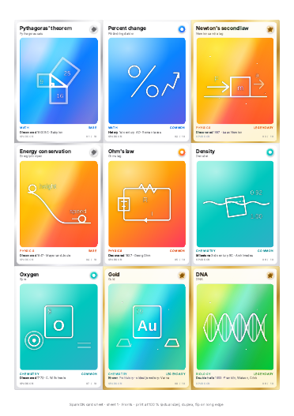

Print and play
Print your own cards.
Every card on this site, ready to print at home: fronts, backs and challenge cards on A4. Each card has a QR code that opens its page here.
SparkON · current deck
SparkON cards
10 concept cards, the π Mystery card and 3 Lab Duel challenges. QR codes open the card pages on sparkon.cards.

School prototype edition
Eureka v1 prototype cards
The first 10 concept cards and 3 challenges from the Eureka school prototype. QR codes open the Eureka v1 card pages.
How to print
- Print on thick paper (200–300 g/m²) at actual size / 100 %, double-sided, flip on long edge. Each back lands behind its front.
- No duplex printer? Print the fronts page, put the sheet back in face down, then print the backs page. Try one test sheet against a window first.
- Cut along the card edges: 3 × 3 cards of 63 × 88 mm per sheet, no gaps. A 3–4 mm corner punch gives rounded corners.
- Laminate in glossy pouches. Holographic film makes the rare cards shine; toner-reactive gold foil works for legendary frames.
- Check a QR code with your phone before cutting the whole batch.
The last page of each PDF has the quick rules for Lab Duel.